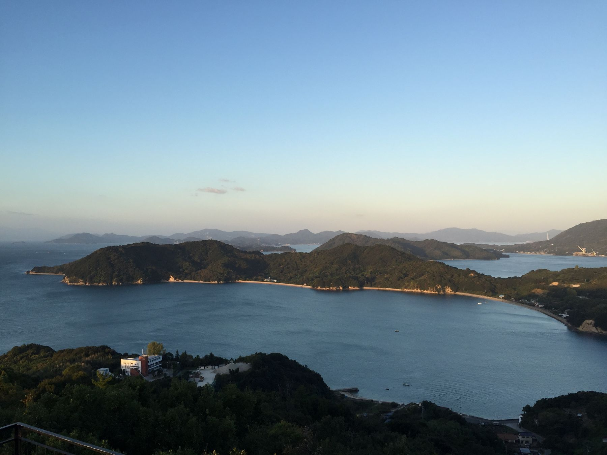
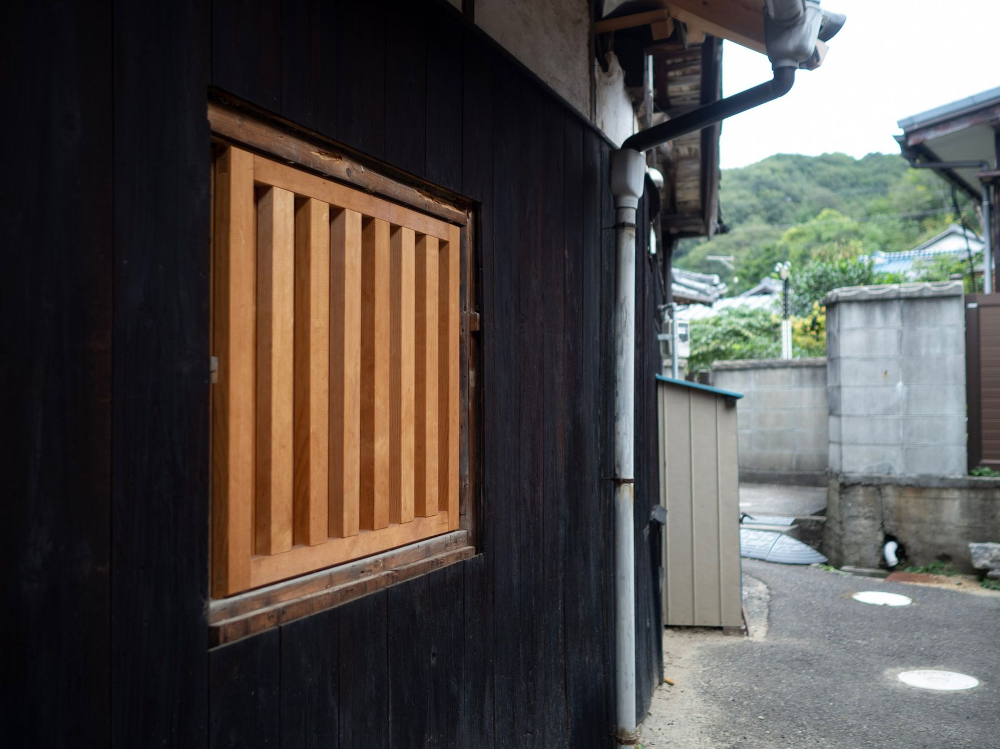

ゆめしま海道を走って、佐島に泊まる
しまなみ海道の東に、もう一本の道があります。

ゆめしま海道のこと
弓削島、佐島、生名島、岩城島。愛媛県上島町のこの四つの島は、橋で繋がっています。全長はおよそ17キロ。しまなみ海道の一日分には、とても届きません。
届かないのが、いいところだと思っています。走り終えたあとの時間が、そのぶん長い。夕方に自転車を降りて、まだ日が暮れていない。そういう場所です。
信号がほとんどありません。対向車も、あまり来ません。橋の上から見えるのは海と、島と、貨物船です。
しまなみ海道から渡る
汐見の家がある佐島は離島ですので、どこかで必ず船に乗ります。しまなみ海道を走っている途中で立ち寄るなら、いちばん早いのはこの道順です。
生口島・洲江（すのえ）港 → 岩城島・小漕（こぎ）港
船で渡り、そこから橋を渡って自転車で佐島まで。
尾道側から来るなら、因島の土生（はぶ）港から芸予汽船で佐島港へ直接という手もあります。宿は佐島港から徒歩2分です。
その他の道順（今治から、広島空港から、三原から）はアクセスのページにまとめています。

自転車ごと船に乗る
自転車は、たいていの船に載せられます。ただし小型の便は自転車と大きな荷物を載せられません。荷物の量によって断られることもあります。
時刻表と運賃はよく変わるので、このサイトには載せていません。各社のサイトでご確認ください。分からないときは、お気軽にお問い合わせください。その日の便に合わせて道順をご提案します。
手ぶらで来て島で借りる、という手もあります。レンタサイクルは、佐島の手前の弓削島（弓削港から徒歩1分のせとうち交流館）が便利です。宿にも貸自転車があります。
宿でできること
- 洗濯乾燥機があります。汗をかいた日は、そのまま洗って寝てください（22時までにお願いします）
- 夕飯と朝飯は、ゲストとスタッフで作って食べるシェアごはん。夕飯をご希望なら17時までにチェックインを
- 薪で焚く五右衛門風呂もあります。準備に時間がかかるため、前日までのご相談をお願いしています
- 自転車の置き場所については、ご予約のときにご相談ください
襖で仕切られた和室に布団を敷きます。門限はありません。詳しくは部屋と設備をご覧ください。

泊まりに来ませんか
走り終えたあとの島の時間を、ここで過ごしませんか。